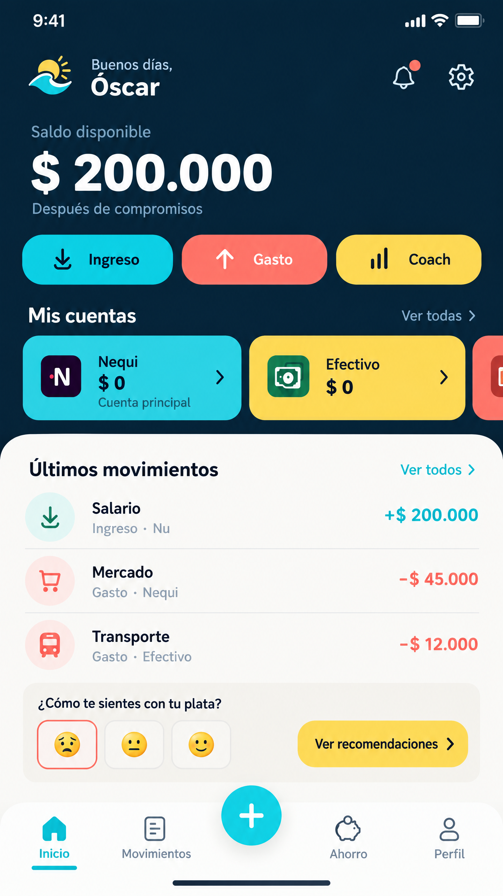
01 · Inicio
Saldo disponible, acciones rápidas, cuentas, movimientos y Coach.
Paquete visual de referencia para Claude: las cuatro pestañas principales son Inicio, Deudas, Ahorro y Análisis. Movimientos, Mis cuentas, Configuración, Registro, Coach y Notificaciones son módulos completos secundarios.

Saldo disponible, acciones rápidas, cuentas, movimientos y Coach.
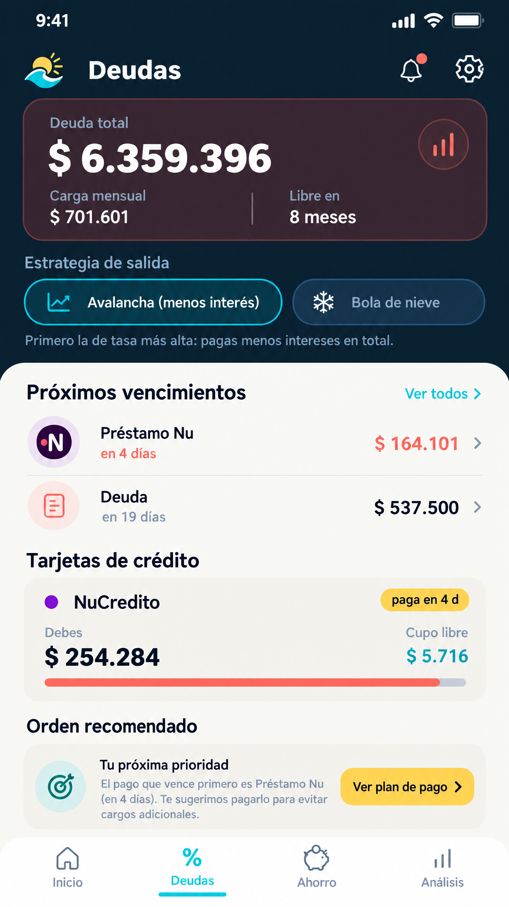
Deuda total, estrategia, vencimientos, tarjetas y prioridad de pago.
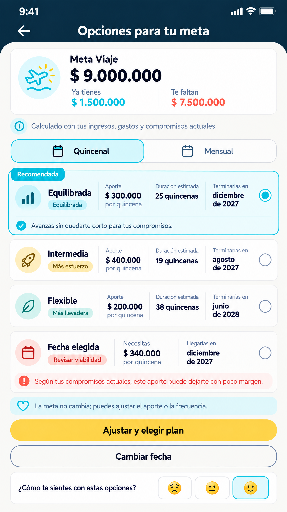
Metas, frecuencia, planes comparables y proyección.
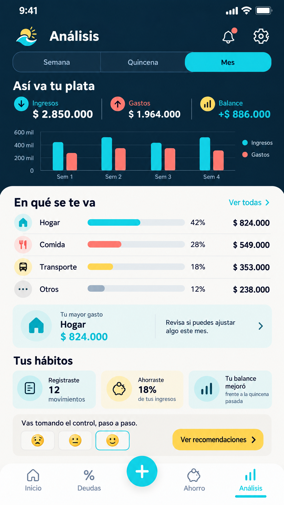
Ingresos, gastos, balance, categorías, hábitos y recomendaciones.
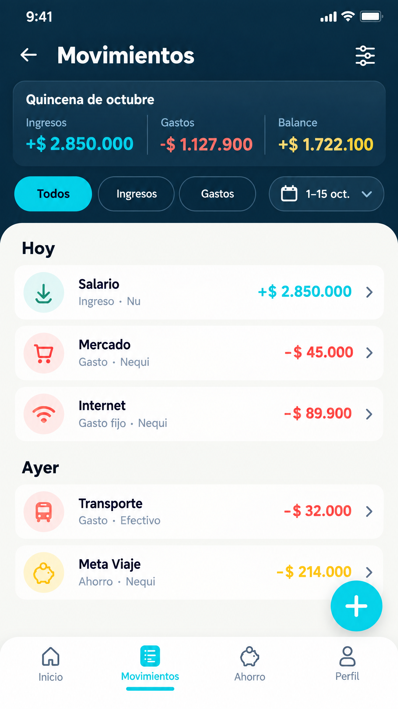
Filtros, periodo, agrupación diaria, gasto fijo, ahorro y FAB.
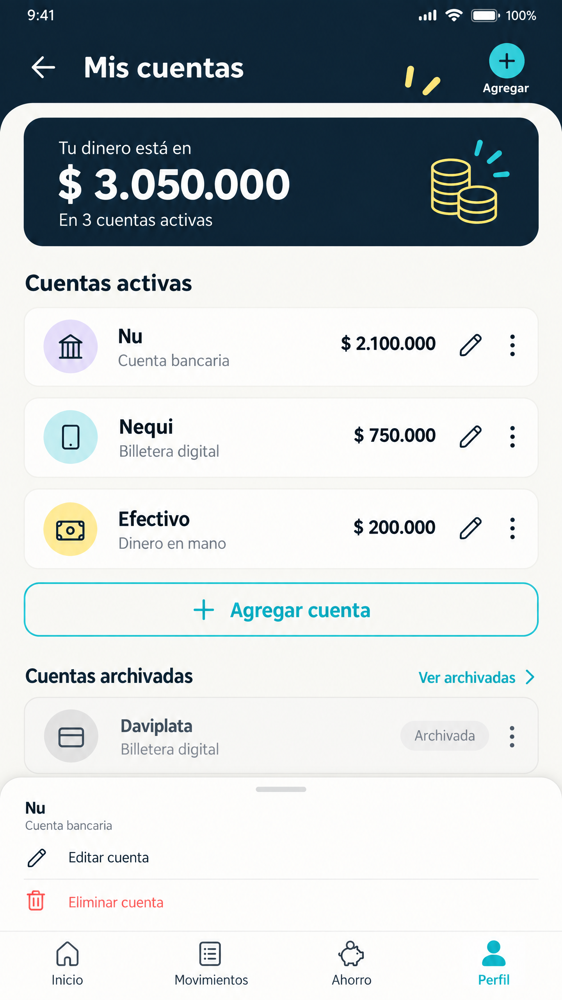
Cuentas activas, archivadas, editar, agregar y menú contextual.
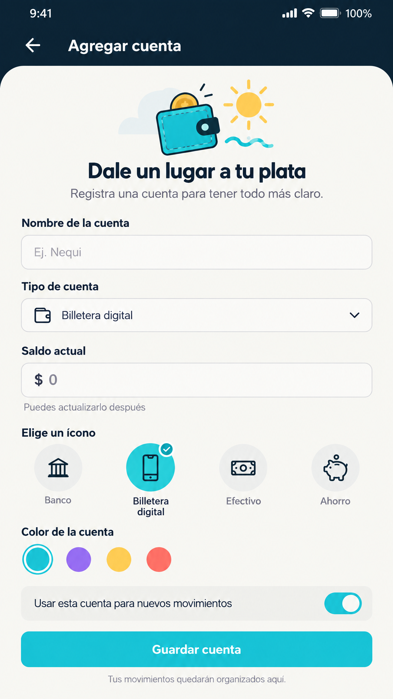
Nombre, tipo, saldo, icono, color y cuenta para movimientos.
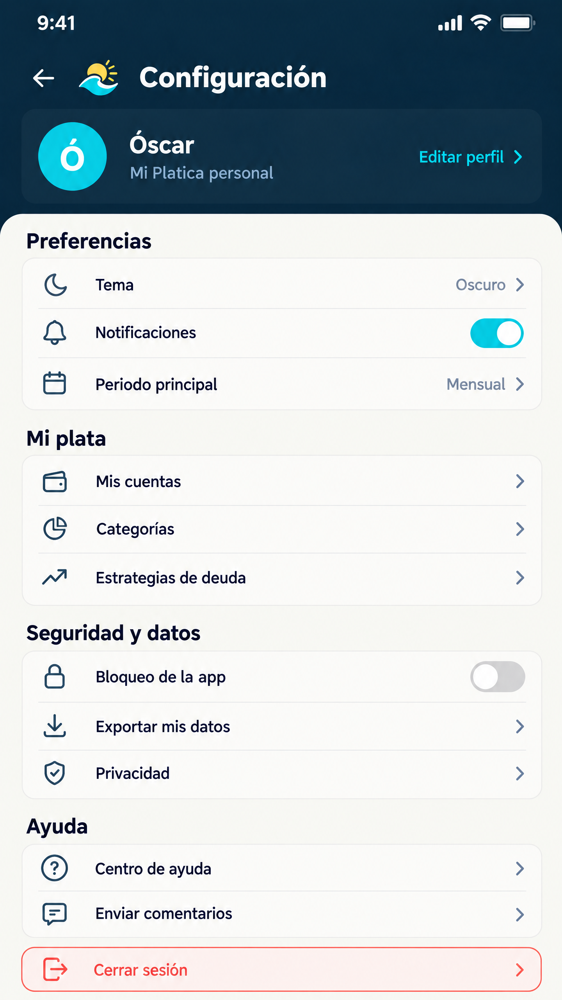
Preferencias, Mi plata, seguridad, datos, ayuda y cerrar sesión.
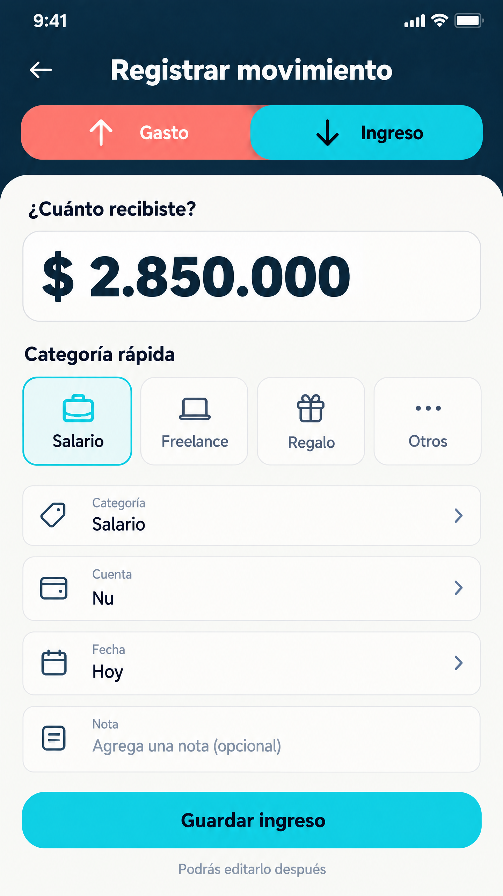
Monto, categorías rápidas, cuenta, fecha, nota y guardado.
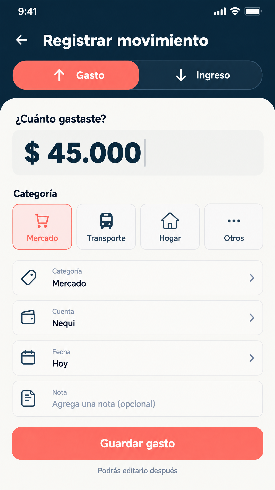
Flujo de gasto con estado coral y revisión previa del Coach.
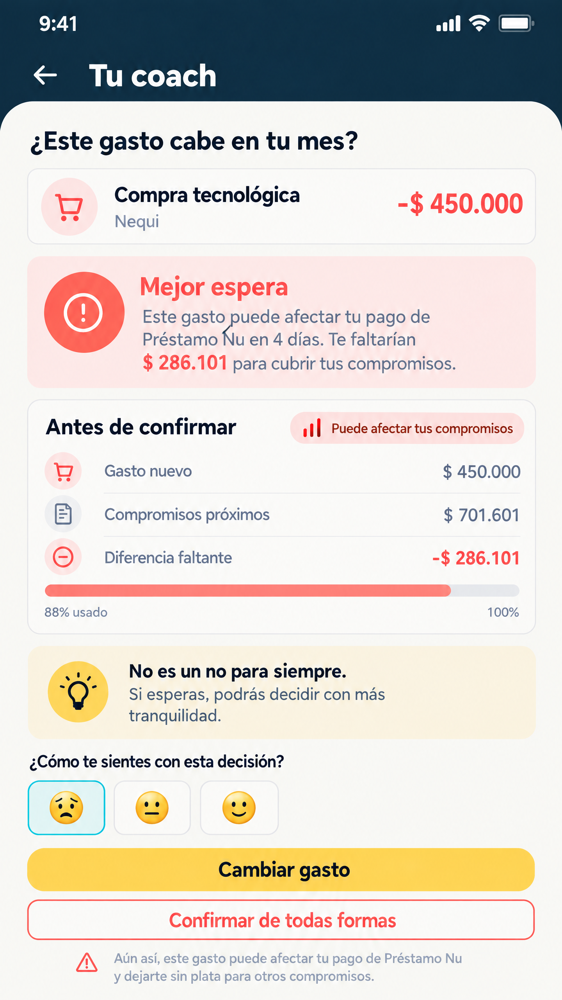
Explica impacto, compromisos, alternativa y confirmación consciente.
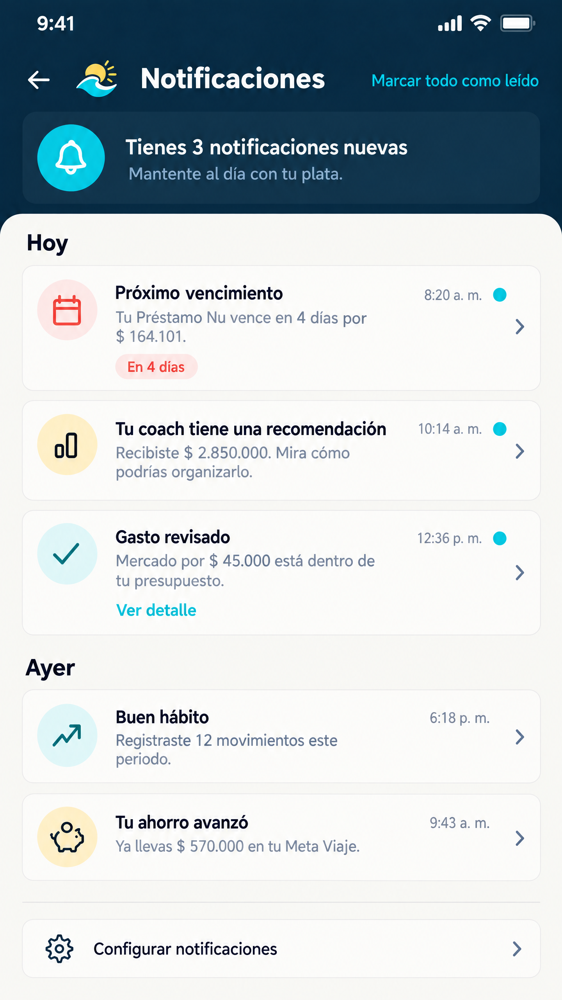
Vencimientos, recomendaciones, hábitos, ahorro y configuración.